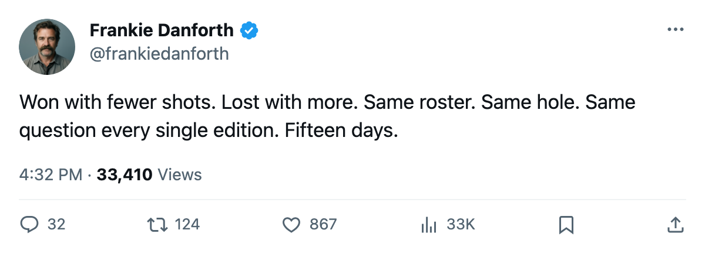
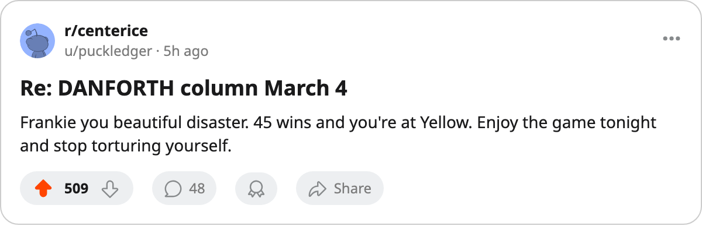

OTT
OTTDANFORTH: 24 shots won a game, the shot number is a coin flip, and the centre is still not here
I was wrong about Tuesday. The hole behind Sundin does not care about the shot total.
 Frankie DanforthColumnist · Queen City Telegram
Frankie DanforthColumnist · Queen City Telegram
Code Yellow

I called it wrong. The shot number went the right way against Carolina on Tuesday and the  Leafs lost 1-2 at home. I said that told me everything. Thursday night,
Leafs lost 1-2 at home. I said that told me everything. Thursday night,  Florida put 31 pucks on
Florida put 31 pucks on  Ed Belfour92 and Toronto won 3-1 on 24 of its own. The shot number went the wrong way and won. I have no framework that explains both nights. I have one fact that explains neither, and it is that the roster behind
Ed Belfour92 and Toronto won 3-1 on 24 of its own. The shot number went the wrong way and won. I have no framework that explains both nights. I have one fact that explains neither, and it is that the roster behind  Mats Sundin89 has no centre who terrifies me heading into May.
Mats Sundin89 has no centre who terrifies me heading into May.
 Marian Gaborik96 scores on whatever he touches. 45 goals in 20.1 minutes a night, 81 points in 66 games, the Development Index has him at 97 overall and +6. That is a 20-goal winger turned into an 80-point man and it will get you through a first round. It does not win a Cup. The team that beats you in the second round puts two defencemen on him every shift and starts finding the seams through the middle.
Marian Gaborik96 scores on whatever he touches. 45 goals in 20.1 minutes a night, 81 points in 66 games, the Development Index has him at 97 overall and +6. That is a 20-goal winger turned into an 80-point man and it will get you through a first round. It does not win a Cup. The team that beats you in the second round puts two defencemen on him every shift and starts finding the seams through the middle.
Through the middle means centre. Mats Sundin has 74 points in 66 games at 34 years old on 19.6 minutes. The legs are there this year. The legs might not be there in year 2 of a 5-year, $8.40M deal. The legs are certainly not there in a series where the other team's 2C shadows him into the boards for the entire night.
Who else plays centre?  Brad Richards85 has 57 points in 64 games at $1.00M. The Index has him +4 at 86 overall. His Book potential is 88, so the 86 is nearly the ceiling. That is a very good second-line centre. He is not the man I am asking for.
Brad Richards85 has 57 points in 64 games at $1.00M. The Index has him +4 at 86 overall. His Book potential is 88, so the 86 is nearly the ceiling. That is a very good second-line centre. He is not the man I am asking for.
Petr Chlup84 is 19, 38 points in 55 games, 16.3 minutes a night, 85 overall, potential 95. He is the future. He is not the answer to tonight's question.
Vaclav Spacek73 is 19, 16 points in 43 games, 8.5 minutes.  Jason Spezza70 has not dressed since before the last edition. That is the centre depth. Four of them. One good one, one very good one, one teenager with upside, one who does not play.
Jason Spezza70 has not dressed since before the last edition. That is the centre depth. Four of them. One good one, one very good one, one teenager with upside, one who does not play.
What the calendar has as the trade deadline is 2005-03-19. Fifteen days. I wrote 17 on Tuesday. I wrote 19 on Saturday. The number shrinks and the answer does not change.
Here is what I know: the team is playing well. Four Leafs on the Index risers. Gaborik +6,  Rostislav Klesla82 +5 at 83,
Rostislav Klesla82 +5 at 83,  Rick Nash81 +5 at 82, Richards +4 at 86. The record is 45-12-4. The home record is 28-7. Nobody in the division is within 20 points. None of that means anything in May without a man who kills a line and wins draws.
Rick Nash81 +5 at 82, Richards +4 at 86. The record is 45-12-4. The home record is 28-7. Nobody in the division is within 20 points. None of that means anything in May without a man who kills a line and wins draws.
The Panic Meter sits at Code Yellow. Code Yellow, not Orange, because 104 points on the board is 104 points and I am not a lunatic. Code Yellow because I remember May of last year and I remember that I was right then and no one listened and I will keep asking until someone on this roster fills the slot or I stop writing this column. Which is never.
What I will watch tonight
Ottawa is without  Marian Hossa83 and
Marian Hossa83 and  Todd White79. The series is 2-1-0 from our side with 11-11 goals. Toronto is 22-9 on the road. This game means one point. It does not answer the question I keep asking. Nothing between tonight and 2005-03-19 answers the question except a phone call from a general manager I do not trust.
Todd White79. The series is 2-1-0 from our side with 11-11 goals. Toronto is 22-9 on the road. This game means one point. It does not answer the question I keep asking. Nothing between tonight and 2005-03-19 answers the question except a phone call from a general manager I do not trust.

